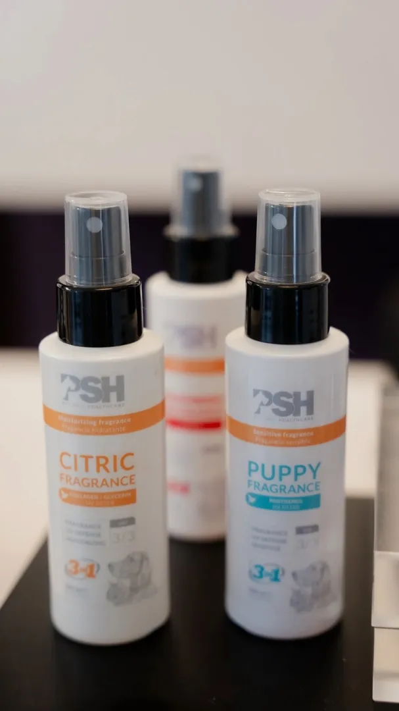
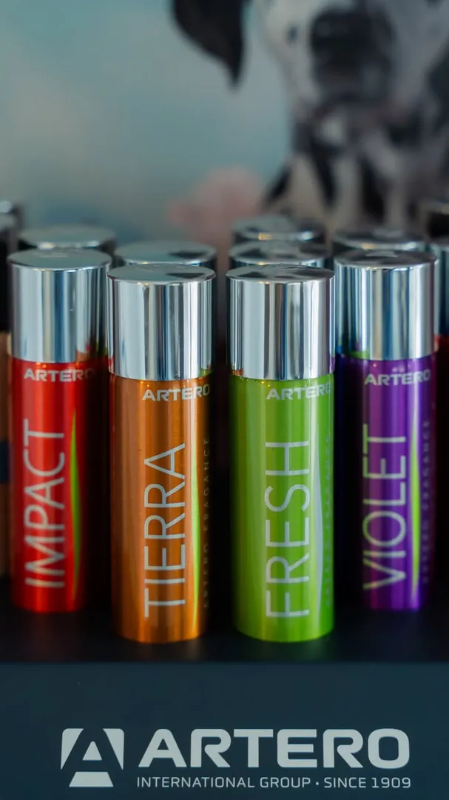
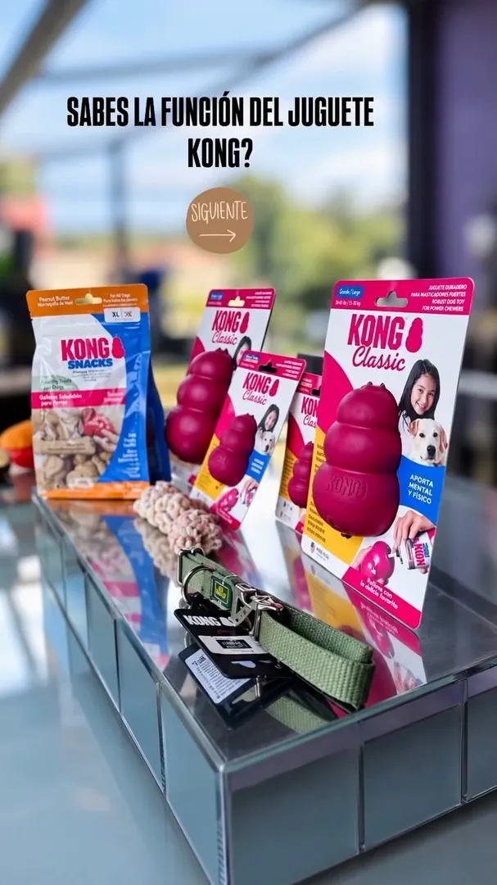

Selección individual
Produtos elixidos segundo o pelo e a sensibilidade.

O produto axeitado cambia a experiencia do baño. Eliximos o coidado coa mesma atención que o corte.
Traballamos con cosmética profesional de PSH Pro Health e Artero. Champús, acondicionadores, máscaras e bálsamos non cumpren todos a mesma función. Seleccionamos cosmética formulada para cans segundo as necesidades observadas e o tipo de manto, con enxaugado e aplicación coidadosos.
Cóntanos se reaccionou a algún produto ou se utiliza cosmética pautada polo seu veterinario. Unha pel que mostra molestias precisa valoración profesional antes de probar novas rutinas.
Produtos elixidos segundo o pelo e a sensibilidade.
Coidado do manto para facilitar o seu mantemento.
Consellos para continuar o coidado na casa.

Mantos que precisan un coidado cosmético específico ou unha rutina de mantemento máis axeitada. En cans con problemas de pel, traballamos respectando as instrucións veterinarias.
Revisamos a rutina actual e posibles sensibilidades.
Eliximos os produtos apropiados ao manto.
Prestamos atención a todas as zonas do corpo.
Explicamos como manter o resultado na casa.
Traballamos con PSH Pro Health e Artero. Se queres levar algo para a casa, mira a nosa tenda.
Unha sesión de coidado coa liña PSH que usamos no salón.
Preme para reproducir a escena completa aquí mesmo, con son e controis. Podes pausar, avanzar ou vela a pantalla completa.
Fotos de clientes de Pelucans. Preme para ampliar.



A sesión comeza antes de entrar no salón e continúa cos coidados da casa.
Trae o nome do champú que usas e cóntanos que resultado buscas: facilitar o peiteado, mellorar a manexabilidade do manto ou revisar unha rutina que non termina de encaixar.
Escollemos o coidado segundo o pelo e a información que nos facilitas. A aplicación, o aclarado e o secado importan tanto como a selección dun champú, máscara ou acondicionador.
Utiliza produtos formulados para cans e respecta as súas instrucións. Se levas cosmética para casa, pregunta como aplicala e como combinala co cepillado. Máis produtos non significan un mellor resultado.
Coméntanos o produto e a súa pauta antes da cita para confirmar como incorporalo ao servizo.
A selección adáptase ao tipo de pelo e ás necesidades que nos contes. Non buscamos unha única rutina para todos.
Si, dispoñemos de produtos para o coidado na casa. Consulta as opcións e a dispoñibilidade directamente con Shadia.
 06
06Baño, secado e cepillado con atención aos pequenos detalles.
 07
07Revisión e corte coidadoso, respectando os seus límites.

08Opcións de alimentación e unha conversa para elixir con criterio.
Cóntanos como é, que lle gusta e que precisa. Do resto encargámonos nós, con calma.